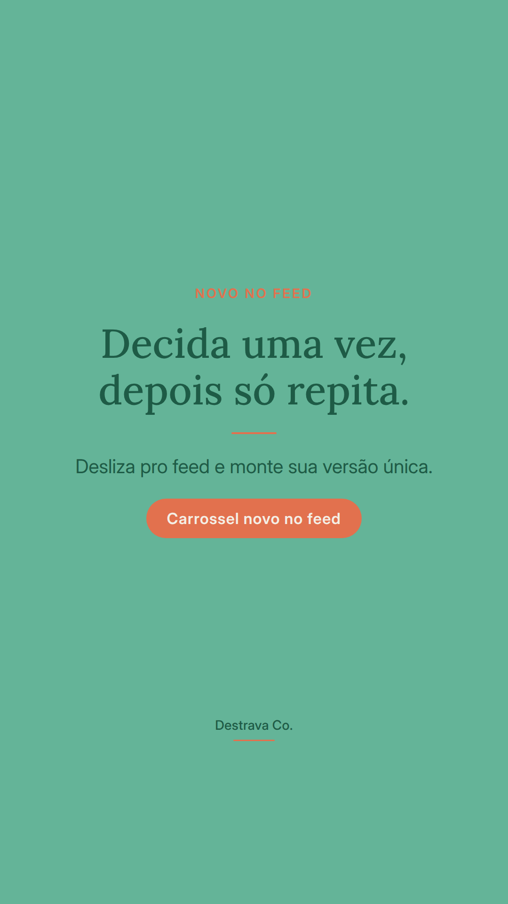
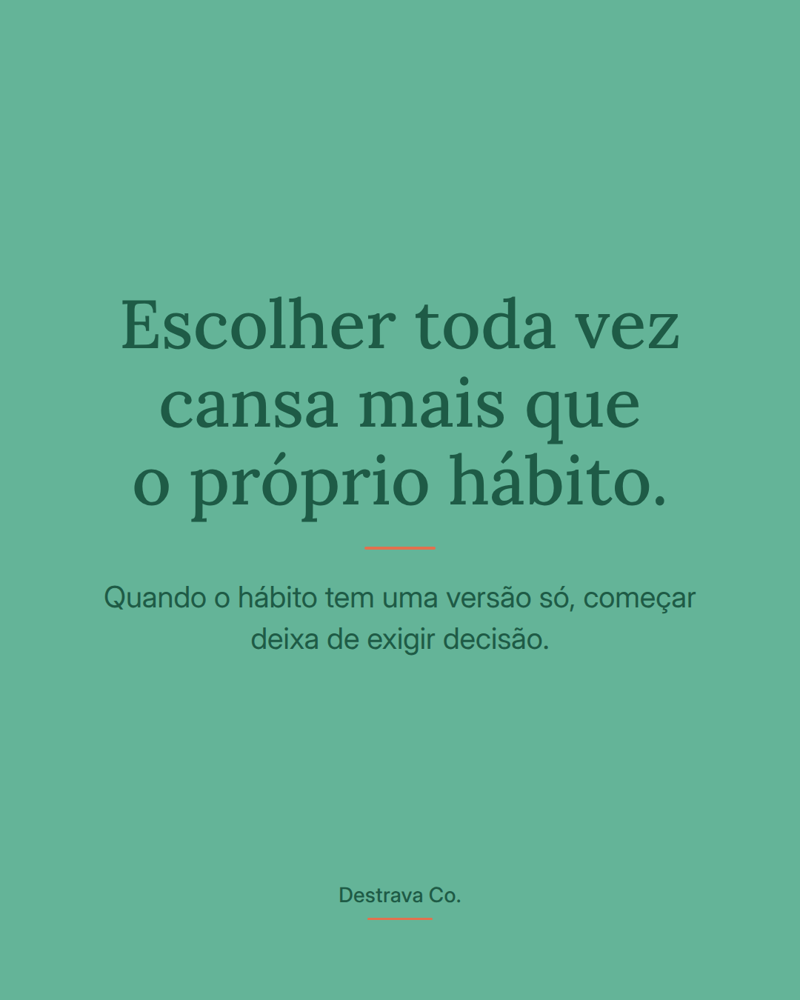
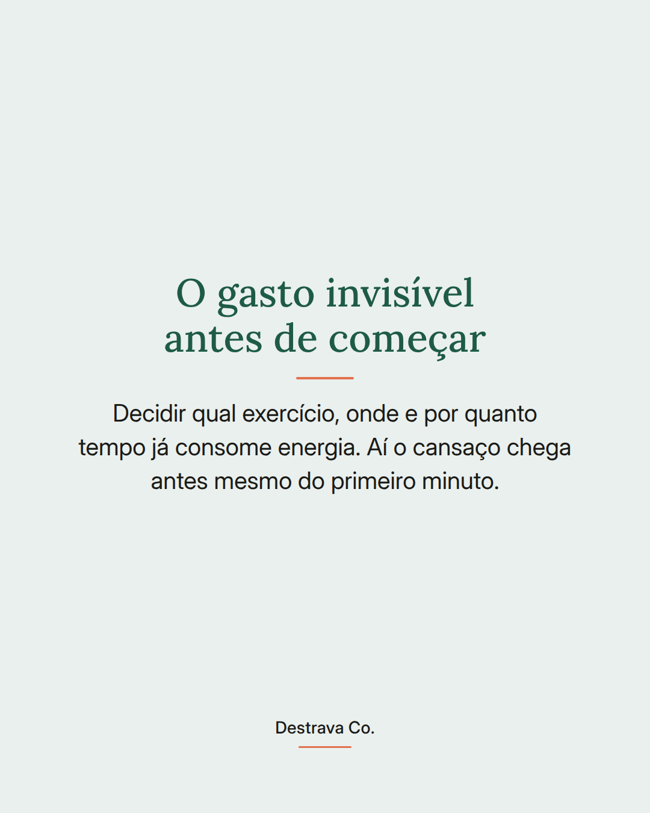
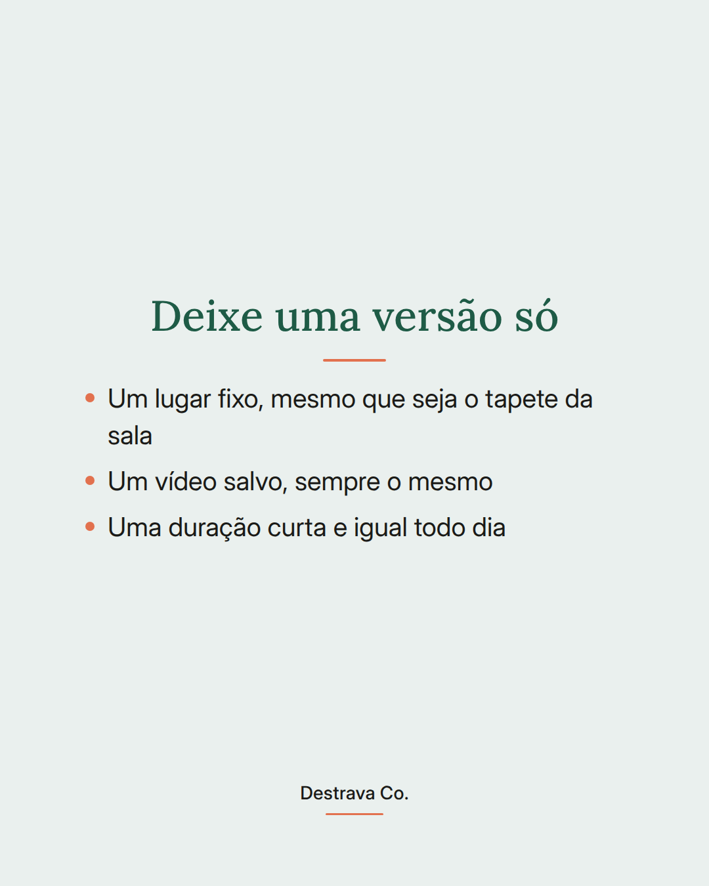
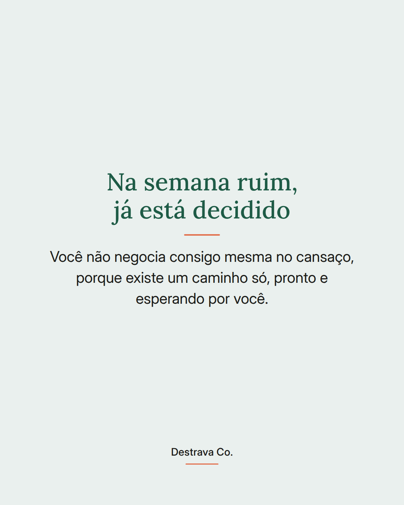
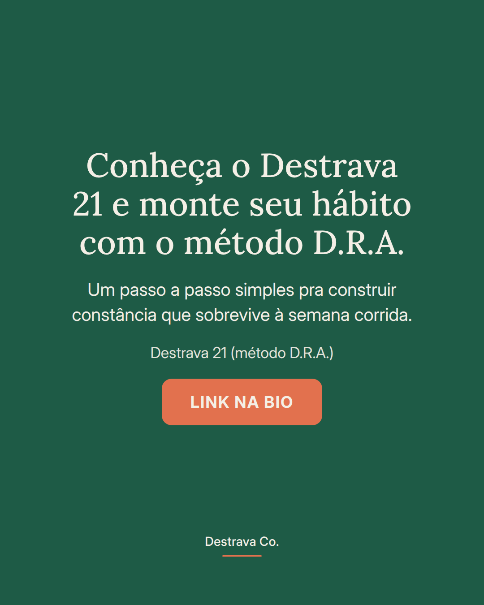

Escolher toda vez cansa mais que o próprio hábito.
Constância em casa costuma travar não na falta de vontade, mas na quantidade de decisões: qual exercício, onde, por quanto tempo, com qual roupa. Quando tudo isso está em aberto, o cansaço chega antes do começo.
A saída é tirar o cardápio de opções. Um lugar fixo, um vídeo salvo, uma duração curta e sempre igual. Você decide uma vez, com calma, e nos outros dias só repete.
Isso ajuda principalmente na semana ruim, quando sua cabeça não tem energia pra negociar. Se existe um caminho só, você vai por ele, mesmo que seja na versão mais curta.
Salva pra lembrar amanhã e compartilha com uma amiga que vive recomeçando do zero. No Destrava 21 a gente monta isso junto, passo a passo, com o método D.R.A.